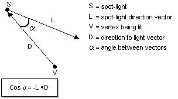
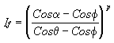
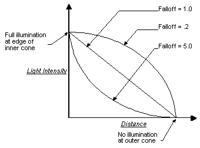

Spotlights emit a cone of light that has two parts: a bright inner cone and an outer cone. Light is brightest in the inner cone and isn't present outside the outer cone, with light intensity attenuating between the two areas. This type of attenuation is commonly referred to as falloff.
How much light a vertex receives is based on the vertex's location in the inner or outer cones. Direct3D computes the dot product of the spotlight's direction vector (L) and the vector from the vertex to the light (D). This value is equal to the cosine of the angle between the two vectors, and serves as an indicator of the vertex's position that can be compared to the light's cone angles to determine where the vertex might lie in the inner or outer cones. The following illustration provides a graphical representation of the association between these two vectors.

Next, the system compares this value to the cosine of the spotlight's inner and outer cone angles. In the light's D3DLIGHT8 structure, the Theta and Phi members represent the total cone angles for the inner and outer cones. Because the attenuation occurs as the vertex becomes more distant from the center of illumination, rather than across the total cone angle, Direct3D halves these cone angles before calculating their cosines.
If the dot product of vectors L and D is less than or equal to the cosine of the outer cone angle, the vertex lies beyond the outer cone and receives no light. If the dot product of L and D is greater than the cosine of the inner cone angle, then the vertex is within the inner cone and receives the maximum amount of light, still considering attenuation over distance. If the vertex is somewhere between the two regions, Direct3D calculates falloff for the vertex by using the following formula.

In the formula, If is light intensity, after falloff, for the vertex being lit, α is the angle between vectors L and D, φ is half of the outer cone angle, θ is half of the inner cone angle, and p is the spotlight's falloff property—Falloff in the D3DLIGHT8 structure. This formula generates a value between 0.0 and 1.0 that scales the light's intensity at the vertex to account for falloff. Attenuation as a factor of the vertex's distance from the light is also applied. The p value corresponds to the Falloff member of the D3DLIGHT8 structure and controls the shape of the falloff curve. The following illustration shows how different Falloff values can affect the falloff curve.

The effect of various Falloff values on the actual lighting is subtle, and a small performance penalty is incurred by shaping the falloff curve with Falloff values other than 1.0. For these reasons, this value is typically set to 1.0.
For more information, see Light Attenuation Over Distance.